Food and Drink
I would imagine that your mouth must be watering upon viewing these photos. Of course, there's must more to Korea that just rice and kimchi. See what else you can eat during your stay in Korea!
Meat Dishes
Kalbi
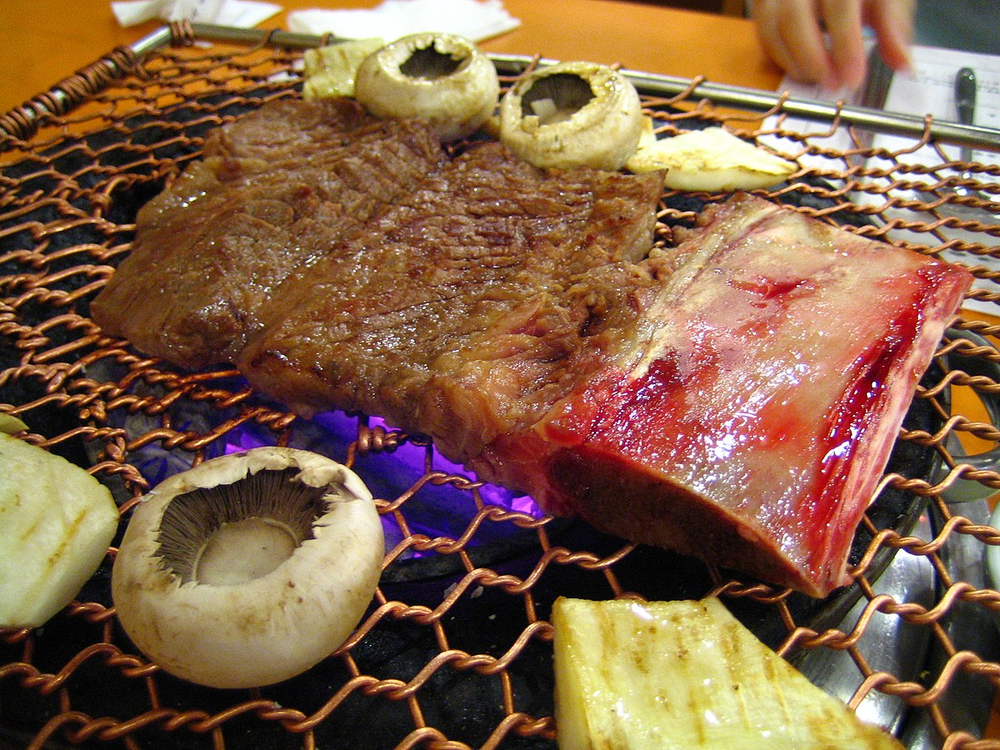Probably the most well known Korean dish any tourist coming to Korea would want to eat. Kalbi is beef ribs cooked right in front of you on a grill! You can trim and eat it by yourself, or eat it in a lettuce wrap with rice and different side dishes too.
Bulgogi
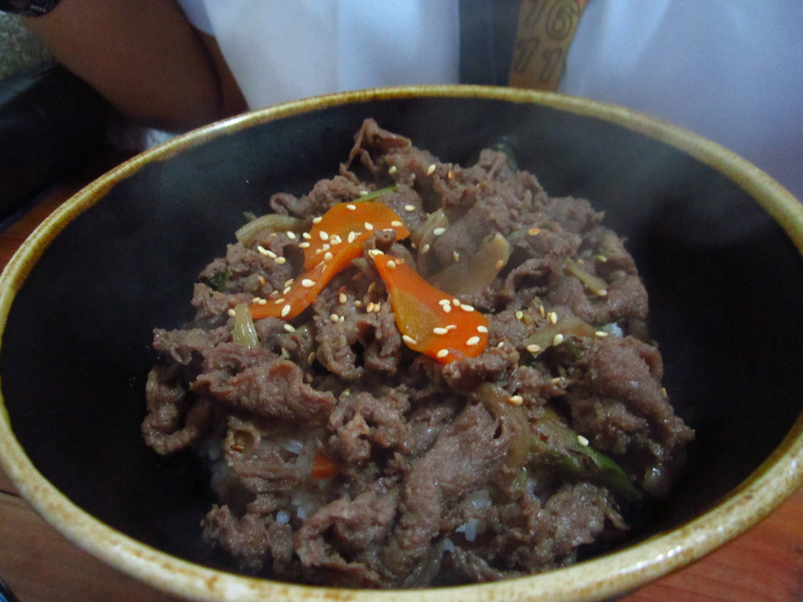Another iconic Korean dish, bulgogi is marianted beef with other condiments and vegetables. It is absolutely scrumptious with rice.
Soups and Stews
Kimchi Jjigae
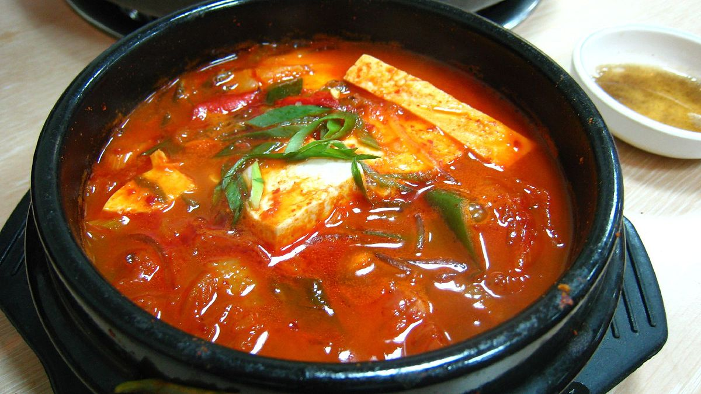Allow me to introduce to you, one of Korea's famous spicier dishes, kimchi jjigae! Kimchi jjigae is kimchi stew, with tofu, chopped spring onions and pieces of pork belly inside. You can eat it in a stone pot, or share it from a huge pot among groups.
Yukgaejang
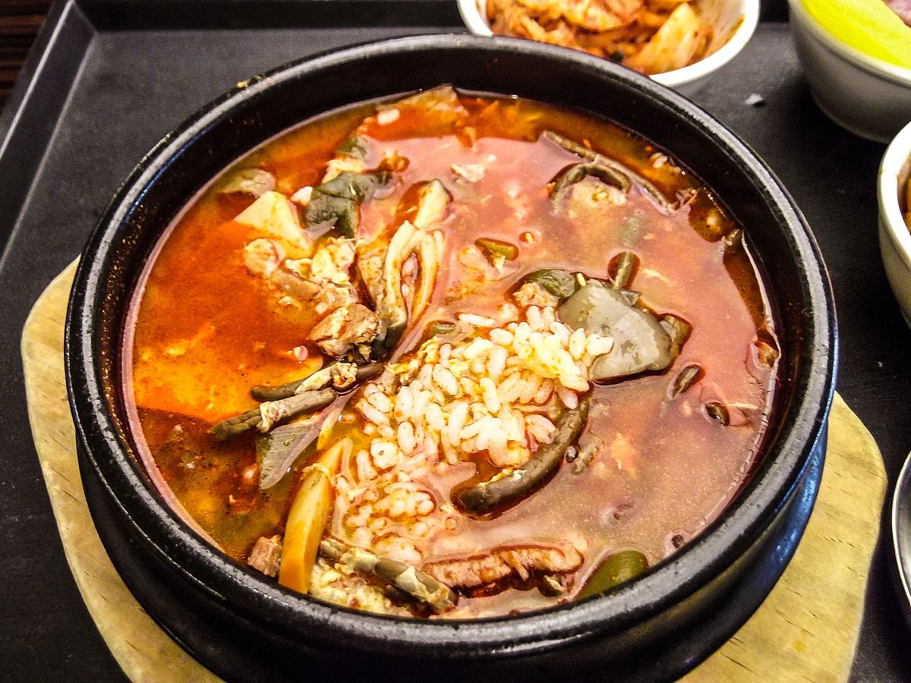A spicy beef and vegetable (bean sprouts, kosari and onions) soup.
Sundubu Jjigae
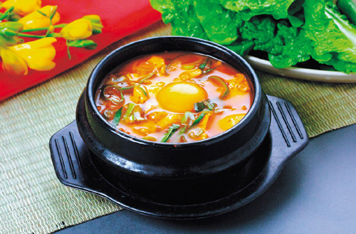A spicy tofu stew, usually topped off with an egg. There are different kinds of sundubu - seafood, kimchi, and much more.
Doenjang Jjigae
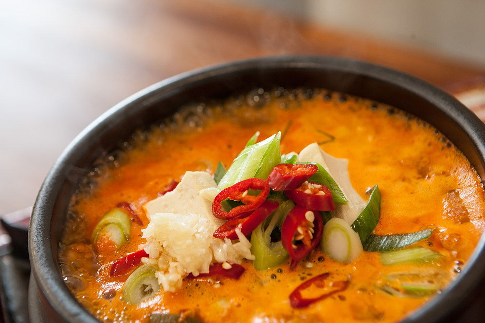A bean paste stew, that can be eaten spicy or mild. It consists of tofu pieces, mushrooms, spring onions and little pieces of meat, usually beef.
Samgyetang
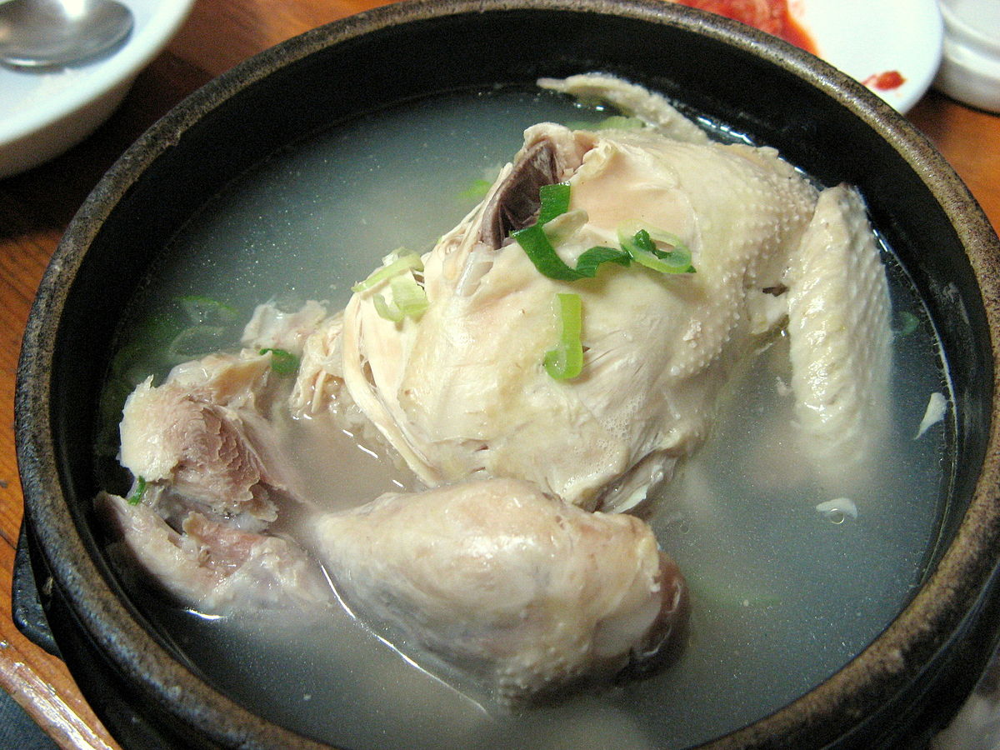You guessed it - it is chicken soup. For those of you not so much into spicy stuff, this is the dish for you. Samgyetang is chicken soup,but not your ordinary kind. It has a whole chicken, with the bones, stuffed with sticky rice, dates and garlic. There is also ginseng inside, which is good for your health. A perfect dish for the winter time.
Rice-based Dishes
Bibimbap
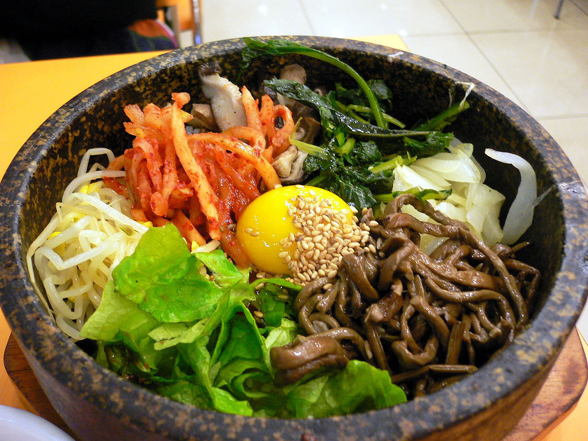Probably the first dish you will try on Korean Airlines. Bibimbap is mixed rice, with vegetables (spinach, bean sprouts, carrots and much more), meat (usually beef), and topped off with an egg. It is often provided with gochujang, or spicy chili paste.
Tteokbokki

A popular snack food, tteokbokki is a spicy rice cake dish, usually topped with spring onions, and sometimes mixed with odeng (fish cakes). You will find this yummy dish in any snack stall in the streets of Korea.
Kimbab
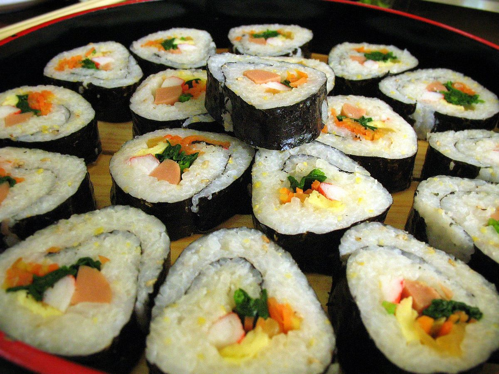Thought it was sushi? Think again. Though its name literally means "seaweed rice", kimbab is kind of like that, but without the raw fish. Kimbab is rice with vegetables and meat (usually spam or sausage), wrapped in seaweed.
Pajeon
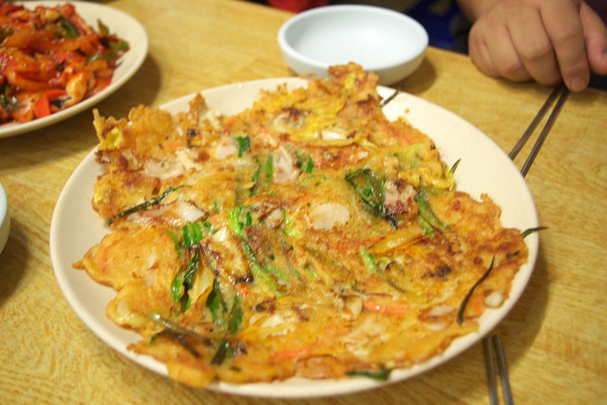Onion pancake. There are many different kinds that you can eat as well, including haemul paejeon (seafood onion pancake), another popular delicacy.
Noodle Dishes
Japchae
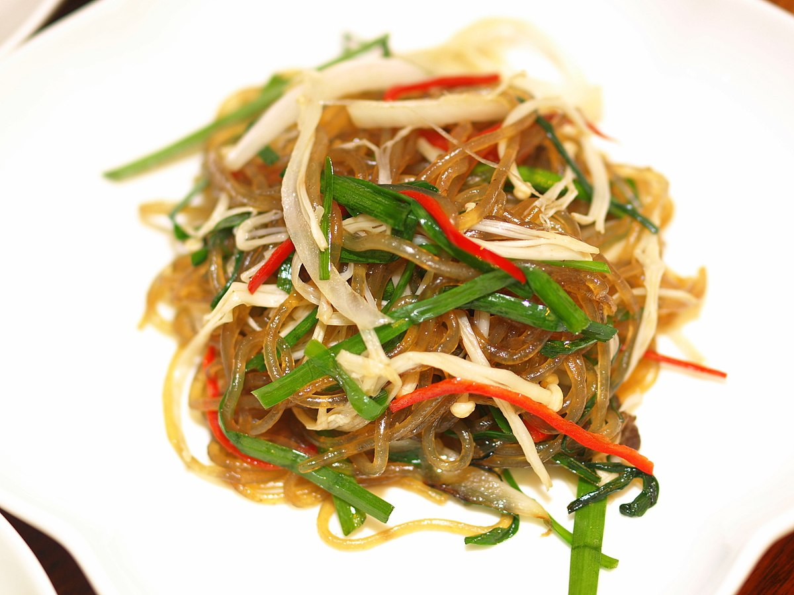Fried noodles with meat and vegetables mixed together. Works well in a lunchbox.
Naengmyeon
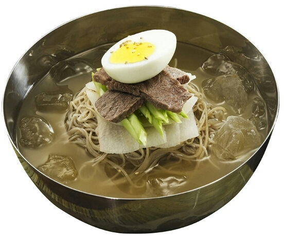Cold noodles. There are different kinds of naengmyeon - mul naengmyeon, cold noodles in an icy broth, as well as bibim naengmyeon, cold noodles marinated in spicy sauce.
Kalguksu
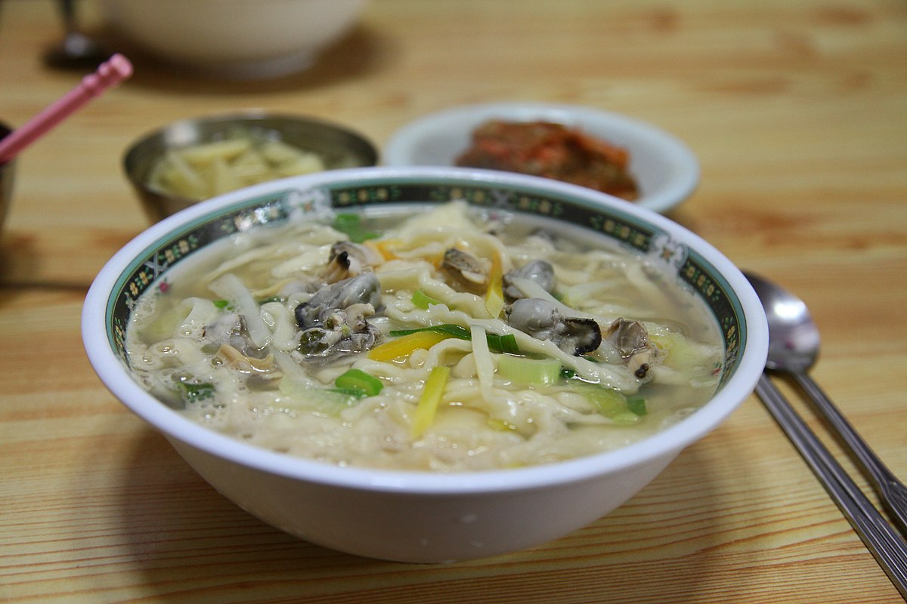Noodles cut from dough into very long pieces in a beef-based broth, mixed with beef and other vegetables.
Dessert
Patbingsu
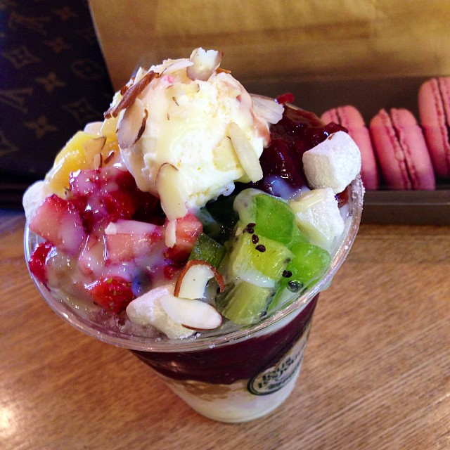Finally, for dessert lovers, this is the dish to finish it all off. Patbingsu is shaved ice, topped with red beans and fruits, and sometimes ice cream or syrup. This is the ultimate dish to eat on a hot summer day in Korea.